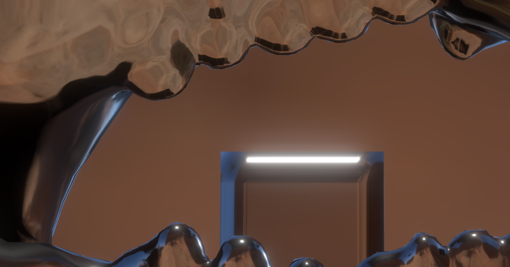
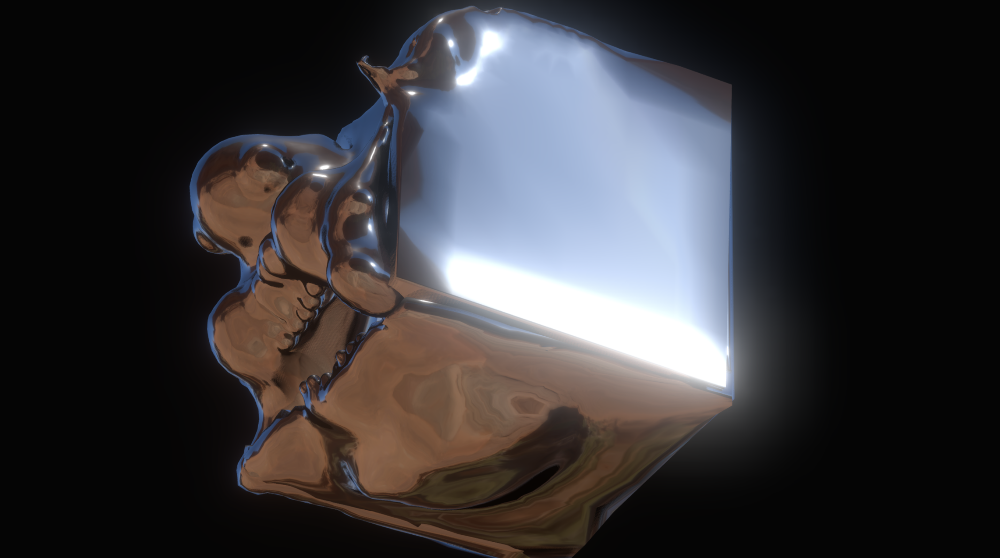
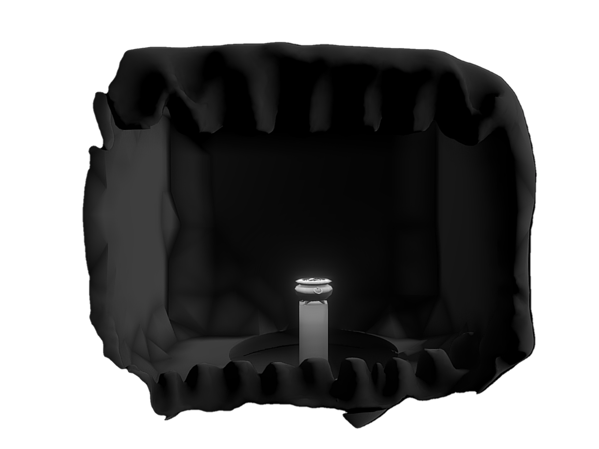
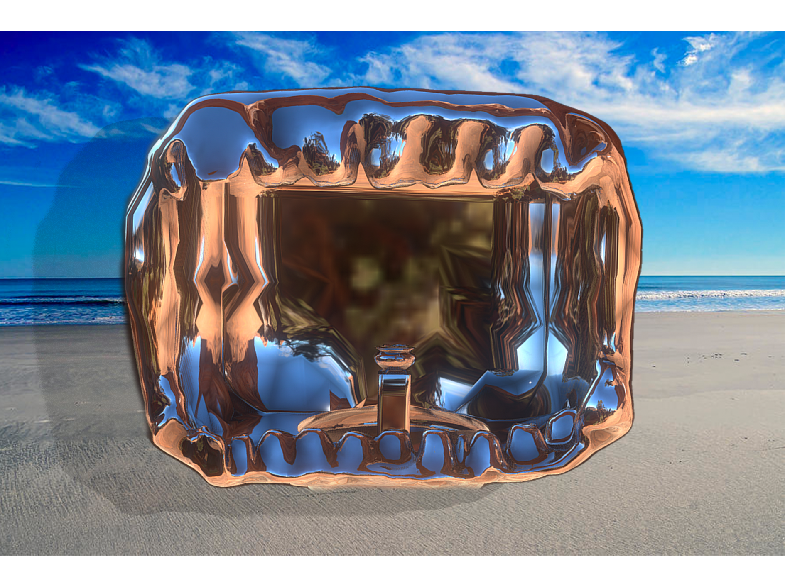
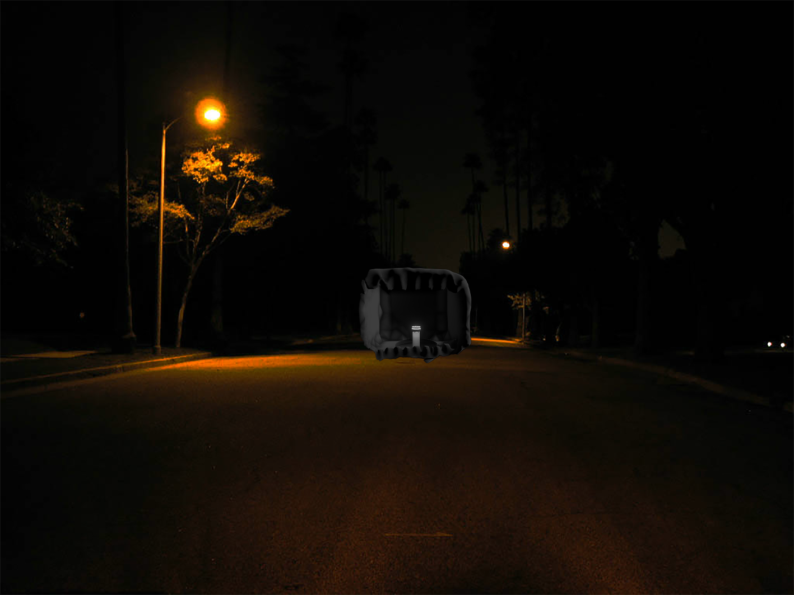
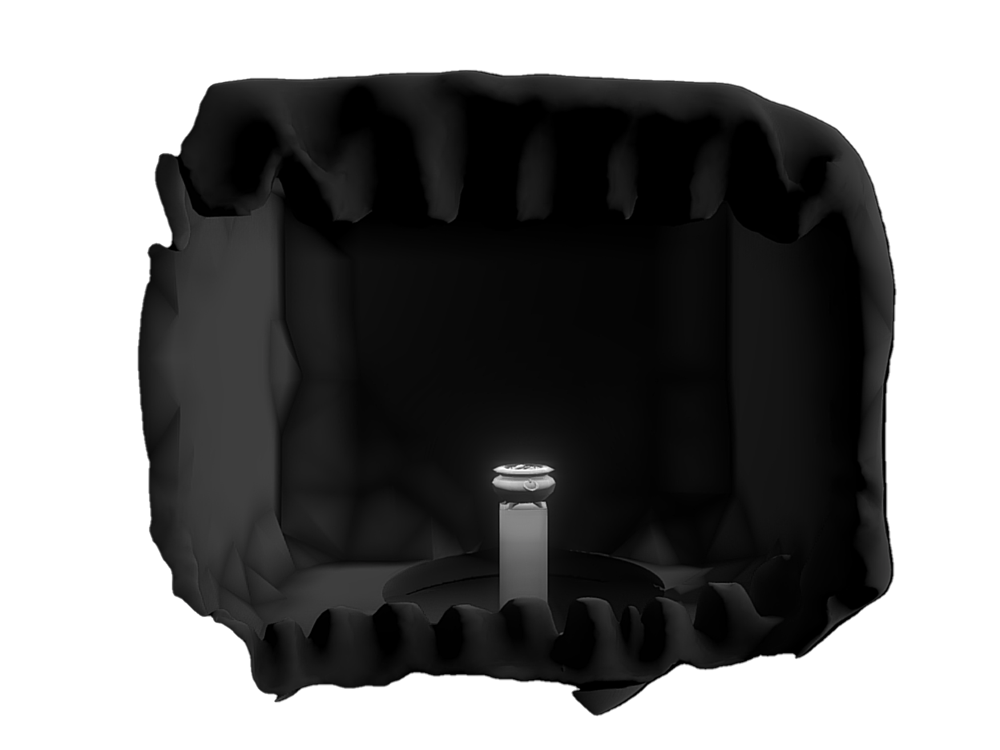
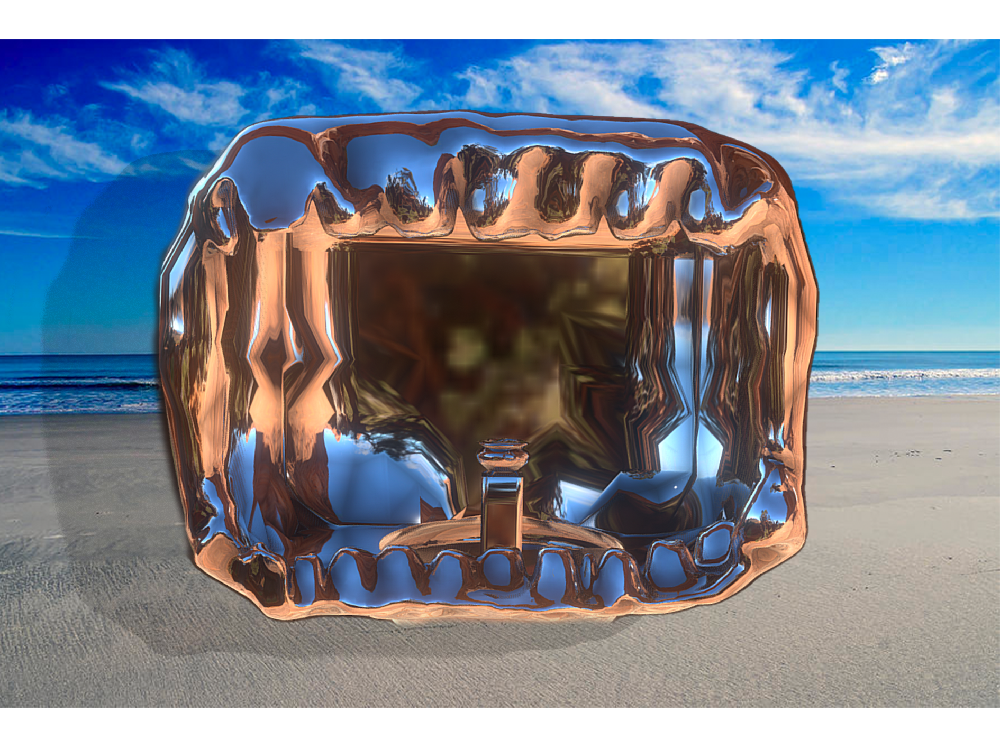
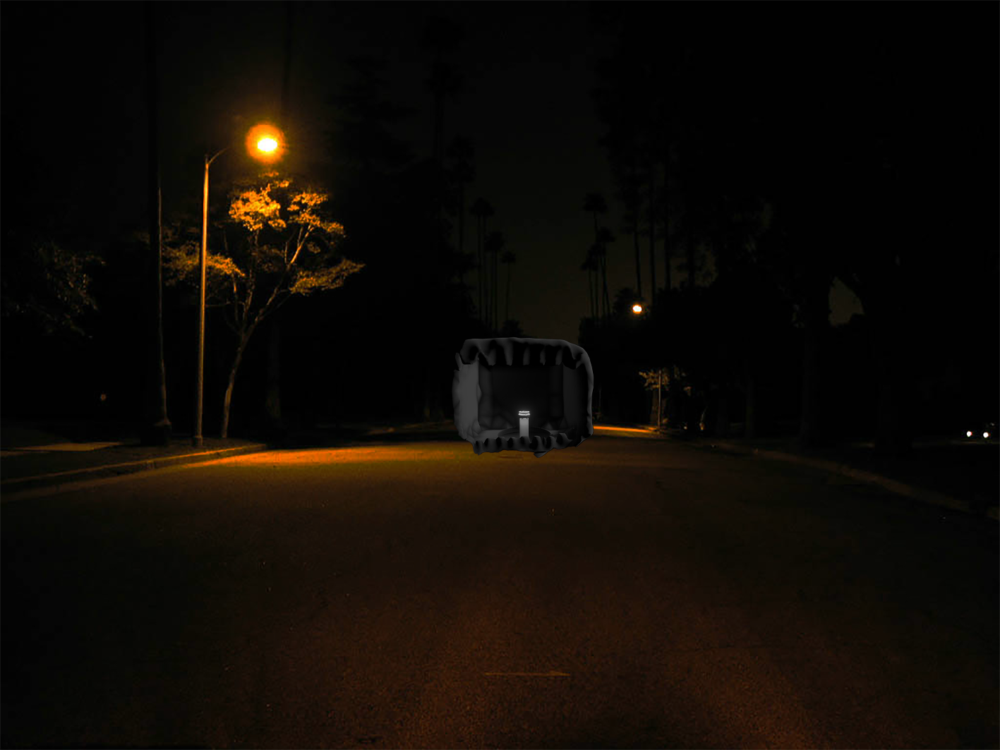

🏡
🖼
🎞
📷
Greed




 





This room has a glossy metal look and I chose metal as the out layer, because it
would look like coins in another hand. In my own experience, money is the most needed thing to
some people. The glossy metal can also let you see your own reflection when you drop down to
the space, it’s like a mirror of yourself and reminding you what greed can make yourself look
like. I’m sure that most people will be shocked and horrified when they are dropping down to
space, so seeing yourself in a difficult position may as well be a hit of what greed can be done to
one person. I also put a central light to the golden pot, so audiences can focus on the golden pot
more and not beware of the trap.